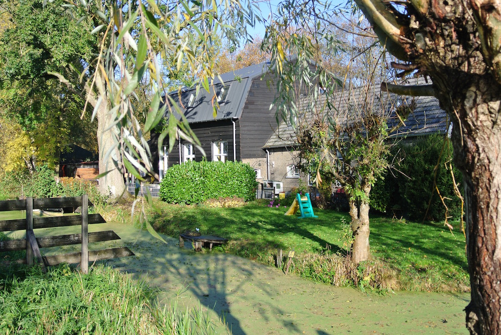
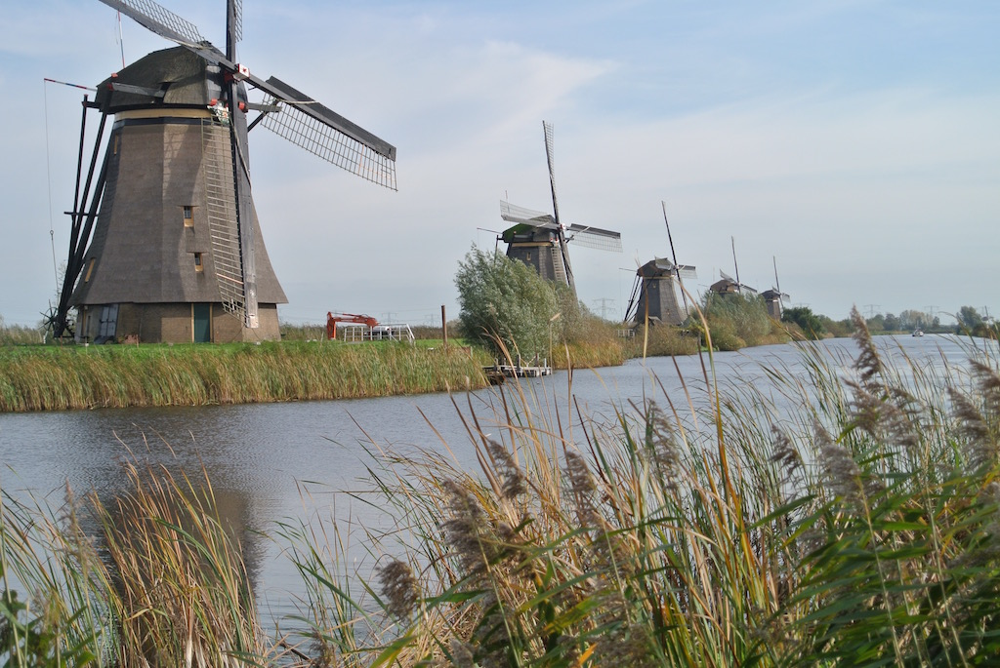
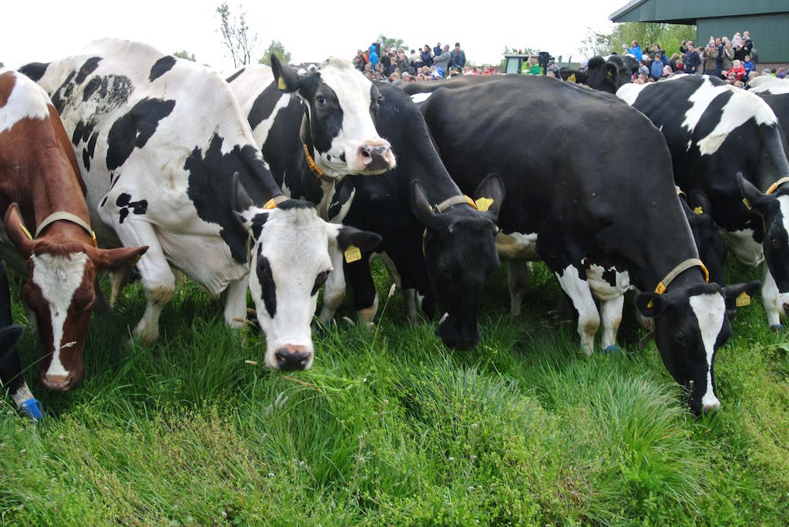

We Missed Drive-It Day
 In April 2016 I took our TC on the club’s Drive-It Day. At the time it was the longest journey I had undertaken in the car on a single day and so was a milestone in itself. It was also a splendid day. It so happened that our Daughter and her family were visiting us from California and so my American Son-in-law joined me on the run. He said that he enjoyed the day. Whether that was a comment on the drive in the TC or the lunch at Elsted I’m not quite sure. We tend to eat quite small portions, even by UK standards (and certainly by US standards) and so it seems that we were not feeding him enough!
In April 2016 I took our TC on the club’s Drive-It Day. At the time it was the longest journey I had undertaken in the car on a single day and so was a milestone in itself. It was also a splendid day. It so happened that our Daughter and her family were visiting us from California and so my American Son-in-law joined me on the run. He said that he enjoyed the day. Whether that was a comment on the drive in the TC or the lunch at Elsted I’m not quite sure. We tend to eat quite small portions, even by UK standards (and certainly by US standards) and so it seems that we were not feeding him enough!
It so happened that our Daughter and her family were here again over the period of this year’s Drive-It Day. However, we had already arranged for us all to visit our Son and his family who live just outside Rotterdam. So we missed this year’s Drive-It Day! Our Son lives in a barn that they had converted into a house, with a small attached cottage at one end and an attached stable at the other. So our Daughter, her husband and their two children were able to stay in the cottage, while we used one of the spare bedrooms in the barn.
While other club member were driving around the Sussex countryside, our party of six adults and three children (two nearly five years and one 18 months) drove to a nearby town called Krimpen aan de Lek and caught the ferry across the river Lek (it’s a car ferry, but we were foot passengers) to Kinderdijk. Whenever you see photos of windmills in The Netherlands, then it is almost certain to be Kinderdijk. The weather was chilly and overcast and we had to shelter from a short shower, but then the sky brightened and we walked along the dyke and then a short way along the stretch of water that is lined with windmills. The windmills no longer pump water from the land up into the river, which is higher than the surrounding land. This duty has been taken over by electric powered Archimedes screws. In spite of it being a Sunday, there were many coach parties of tourists being guided along the bank, sharing the tarmacked path with cyclists. We noticed German, Spanish, Chinese and Japanese groups. The children stopped for the obligatory photo in a giant wooden clog and then we walked back to the ferry and home.
The previous day we had taken the children to a farm, just the other side of the village in which our Son and his family live, to see the dairy cows being let out into the fields for the first time this Spring. There were several hundred people and a couple of hundred cows prancing around the field (cows not people). It was quite a spectacle. The farm produces cheese from unpasteurised milk.
Our final whole day was even more exhausting than the rest. Our Son and Daughter and their partners went out (with the 18-month old grandchild) and left us with the two five-year olds!
(Written 6th May 2017; published in WSMGOC Main Gear, June 2017.)
© David James 2020 Last updated: 19th April 2020